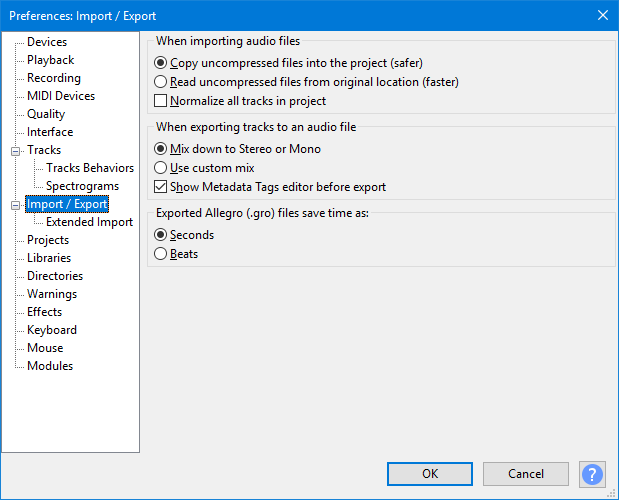

Import / Export Preferences
- Accessed by: (on a Mac )
- 
- Import / Export Preferences.
- Click on any other Preferences sections in the above image to read about those Preferences.
When importing audio files
Audacity always makes a copy of compressed files like MP3, OGG and FLAC when it imports them. The data is copied either into the temporary folder, or into the _data folder of an open project. Uncompressed files (WAV or AIFF) are very much larger, so may lead to a shortage of disk space if copied in. Audacity therefore allows you to choose from the following two options when importing WAV or AIFF files:
- Copy uncompressed files into the project (safer): Audacity makes a copy of the imported file(s), so you can then move, rename or delete them if you wish. Also choose this option if you need to open your Audacity project on another computer, or send it to someone else. Note: you do not need to choose this option if you are sending an exported audio file like an MP3 to someone else.
- Read uncompressed audio files from original location (faster): Audacity reads the imported files from the computer folder you first imported them from, without copying them in. Therefore with this option set, you must not move, rename or delete imported uncompressed files, or the folder they are in. The advantage of this option is that long files can be imported in only a few seconds, using On-Demand Loading.
| The very first time you import any uncompressed audio file(s), a warning dialog will appear, offering the above choice for the current file(s). The default will be set to "Make a copy". The method you choose in the dialog will thereafter be saved in the above preference and will be set as default when the dialog appears on next import. You can turn the warning dialog off either in the checkbox in the dialog or in the Warnings Preferences, then your saved choice of import method will be applied automatically each time. |
- Normalize all tracks in project: The imported file (in any format) and all audio tracks already on screen will be normalized to your current setting for the Normalize effect.
When exporting tracks to an audio file
- Mix down to Stereo or Mono: This is Audacity's default behavior and means that if your project contains only mono tracks panned to center, they will be mixed upon export to a file containing a single mono channel. The audio will still play equally out of both speakers on most systems. If you have any stereo tracks in your project (or any mono tracks panned away from center) the exported file will be stereo, containing two channels (left and right).
- Use custom mix: When this option is enabled, an Advanced Mixing Options window appears immediately after completing the Export Audio Dialog (custom mix is not available when using Export Multiple or Chains). Advanced Mixing gives you much greater flexibility in mapping your audio tracks to specific output channels in the exported file. In particular it allows export of multi-channel files (that is, having more than two channels of audio) in WAV, AIFF, OGG, FLAC, AC3 and M4A formats. Any leading white space between time zero and the start of the audio will be rendered as silence in the exported channels, preserving their time offset.
- Show Metadata Tags editor before export: By default, Metadata Tags editor appears every time you export a file with the , or commands. You can uncheck this option if you do not intend to add embedded information tags such as Artist Name or Genre to your exported files.
- Unchecking this option does not prevent metadata being written if imported files already contain metadata.
- Export Multiple will still export metadata for Track Title and Track Number even if this option is unchecked and Metadata Editor is empty.
- Regardless if this option is checked, Metadata Tags editor is always suppressed when exporting files in a Chain.
- Regardless if this option is checked, Metadata Tags editor is always suppressed when exporting using the (external program) (command-line) save as type, because any metadata required should be added to the command string in that case.
Exported Allegro (.gro) file saves time as
When using you can export to .mid or .gro extension. The .gro extension signifies the Allegro file format which exports the Audacity Note Track as human-readable plain text. This preference controls whether the .gro file represents time and duration in seconds (default) or beats.
- Seconds: An example line in the .gro file would look like:
T1.3330 V0 K66 P66 U0.6660 L127
This instruction means "play key number 66 at time (T) 1.333 seconds for duration (U) 0.666 seconds." - Beats: An example line in the .gro file would look like:
TW0.5000 V0 K66 P66 Q1.0000 L127
This instruction means "play key number 66 at time (T) 0.5 whole notes (W) for duration (Q) 1 quarter notes."
| Audacity can import both .mid and .gro files for display, editing and playback. The .gro files will be imported correctly whether they contain data in seconds or beats. However many general purpose MIDI applications will not play .gro files. |